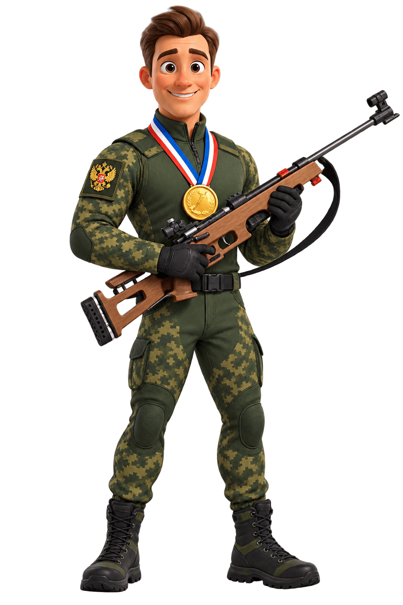
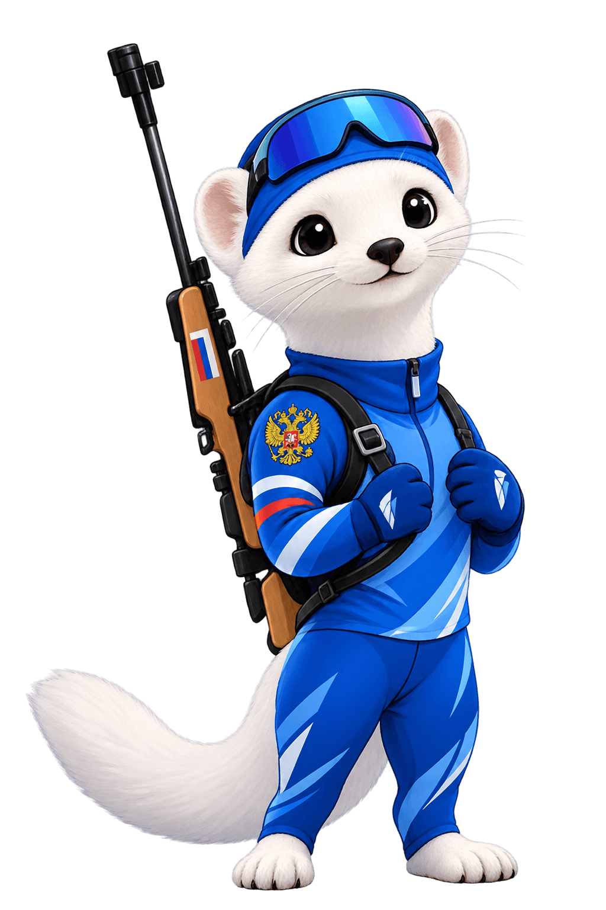

Хочешь попробовать биатлон, но не знаешь, с чего начать?
Мечтаешь о золотом знаке ГТО и спортивных победах?
Готов стать частью команды, которая представляет твой колледж или вуз на всероссийском уровне?
Тогда этот проект — для тебя!
«Биатлон ГТО для студентов» — это программа для студентов колледжей, техникумов и вузов, реализуемая при поддержке Министерства спорта Российской Федерации, Министерства просвещения Российской Федерации и Союза биатлонистов России. Проект разработан Благотворительным фондом «Биатлон — Готов к Труду и Обороне».
Занятия проходят на базе твоего учебного заведения — в спортзале, на стадионе или на специально оборудованной площадке. Ты бежишь короткую дистанцию или эстафету, а затем выходишь на огневой рубеж и стреляешь из пневматической винтовки. Вместо штрафного круга — силовое задание: приседания, отжимания или берпи. Всё как во взрослом биатлоне, только безопасно и доступно каждому.
Программа готовит тебя к сдаче нормативов ГТО, развивает выносливость, координацию и стрессоустойчивость. А ещё — это реальный шанс попасть в студенческую спортивную лигу по биатлону и представить свой регион на всероссийских соревнованиях.
Каждое занятие — это мини-соревнование, где ты проверяешь себя в беге и стрельбе.
В рамках проекта учебные заведения и опорные площадки ГТО на определенных условиях получают мобильный специализированный комплекс «Биатлон-ГТО»:
Безопасная, лёгкая, создана на базе МР-61 специально для соревнований и учебных занятий. Позволяет стрелять в любом спортзале без специального тира. Полностью отечественная разработка.
Ключевой элемент для отработки стрельбы и проведения соревнований.
Специальные подставки для винтовок и нескользящие коврики для зонирования огневого рубежа.
Сценарии спортивных праздников, эстафет и поурочные планы для преподавателей физической культуры.
«Биатлон ГТО» — это не просто игра. Это тренировочный элемент, который напрямую готовит тебя к сдаче официальных тестов ГТО. Элементы биатлона тренируют меткость, координацию и стрессоустойчивость, которые проверяются в нормативах: «Стрельба из пневматической винтовки» и «Метание мяча в цель». Сдав нормы ГТО, ты получишь знак отличия — золотой, серебряный или бронзовый. А это — гордость для тебя, твоего учебного заведения и твоей семьи!
А ещё — это прямая дорога к допризывной подготовке. Навыки стрельбы и работы с оружием пригодятся тебе в армии и в жизни.

Ты становишься сильнее и выносливее — регулярные тренировки укрепляют тело и дух.
Ты учишься стрелять — навык, который пригодится в спорте, жизни и армии.
Ты участвуешь в соревнованиях — от внутривузовских до всероссийских.
Ты находишь друзей и команду — в студенческом спортивном клубе всегда веселее.
Ты готовишься к ГТО — и можешь получить знак отличия.
Ты становишься частью большого проекта — более 1 миллиона студентов уже с нами!
Ты можешь войти в студенческую лигу по биатлону — и представлять свой регион.
